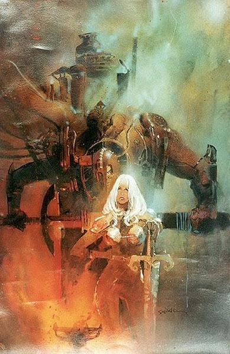
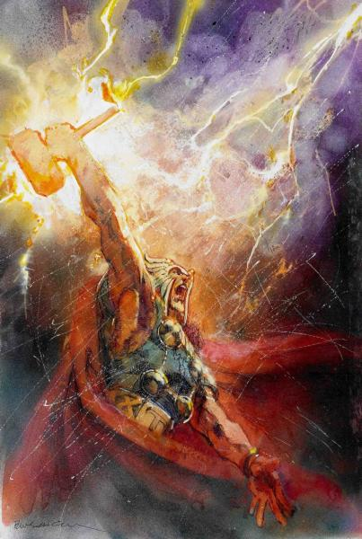
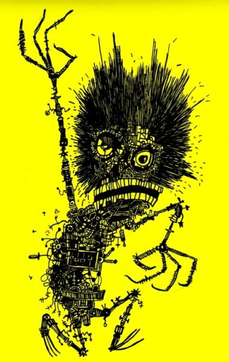

Boleslav William Felix Robert Sienkiewicz, better known as Bill Sienkiewicz, is an Eisner Award-winning American artist who produces comic book art, primarily for Marvel Comics' The New Mutants and Elektra: Assassin. Sienkiewicz often utilizes oil painting, collage, mimeograph, and other forms generally uncommon in comic books.
After art school, he showed a portfolio of his work to DC Comics' art director Vince Colletta, which led to his entering the comics field at age 19. The artist recalled in 1985, "They didn't have any work for me, but that didn't bother me. I just figured that if comics didn't work out I'd have done advertising or illustration. Vinnie called [renowned comics and advertising artist] Neal Adams, who put me in touch with [Marvel Comics editor-in-chief] Jim Shooter. Soon after that I was drawing Moon Knight, in The Hulk [black-and-white comics] magazine". His art style was heavily influenced by Neal Adams.
He illustrated New Mutants from 1984–1985.
Sienkiewicz produced covers for a range of Marvel titles, including Rom, Dazzler, The Mighty Thor, Return of the Jedi and The Transformers, and drew the comic adaptation of Dune.
  